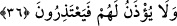
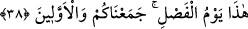
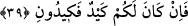

36. Onlara izin de verilmez ki (sözde) mâzeretlerini beyân etsinler.
Bu âyet-i kerîmede yer alan “onlara özür dilemeleri için” şeklindeki ifâde daha önce
geçen “onlara izin verilmez” ifâdesi üzerine atfedilmiştir. Burada onlara izin
verilmediğinden, özür dilemediklerinden söz edilmektedir. Bir başka ifâdeyle onların o
gün ne izinleri ve ne de özürleri olmayacaktır. Özürlerinin olmaması kendilerine izin
verilmemesinden kaynaklanmış olmayacaktır. İleri sürecek mâzeretleri de yoktur. Şâyet
olsaydı zâten bunu ileri sürmelerine engel yoktu. Kendisine nimet veren yaratıcısından
yüz çeviren, O’nun nimet ve ihsanlarını inkâr eden kimsenin ileri sürebileceği ne özürü
olabilir ki! Özür dilemeleri konusunda kendilerine izin verilmez.
37. O gün, (hakîkatleri) yalan sayanların vay hâline!
“O gün” bu haberleri ve kesin olarak meydana gelecek olaylarda yer alan hakkı
“yalan sayanların vay hâline!”
38. (O zaman şöyle denir:) Bu, ayırım günüdür. Sizi ve sizden öncekileri bir araya
getirdik.
“Bu” korkunç manzara ve durumunu müşâhede ettiğiniz gün, hak ile bâtılı “ayırd etme
günüdür.”
Baklî bu âyeti şöyle tefsir ediyor: Bu nefis ile şeytanın ârifin kalbi civârından ayrılma
günüdür ve bu herşeyin, mahbûbundan başkasını seven kimseden ayrılma günüdür.
Şöyle ki; bu gün o kişi sevgilisinin keremine, şühûduna ve vücûduna dalmış, onda fânî
olmuştur.
Ey Muhammed “sizi ve” geçmiş milletlerden “öncekileri bir araya topladık.” Âyetin
bu ifâdesi yukarıda sözü edilen “ayırdetme”yi beyân ve ifâde etmektedir. Çünkü hak
yolda olanla bâtıla sapan arasını ve bâtıla sapanla peygamberlerin arasını ayırt etme,
ancak herkesi bir araya toplamakla olur. Bütün bunların huzûra getirilmesi şarttır.
Özellikle yargılamaya, katılmayan kimsenin aleyhinde hüküm vermeyi câiz görmeyen
âlimlere göre...